Monitoring, backup and restore, and security
Monitoring
Three sources feed one CloudWatch dashboard, Mabi-Operations: EC2's own metrics (CPU, status), the container logs (shipped by Docker's awslogs driver), and my own metrics in the namespace NBU/Mabi. A small job (request_metrics.py, every minute) reads new answers from MongoDB and publishes requests, successes, failures, empty answers, response time, disk and memory use. A Lambda function checks the public site every 5 minutes.
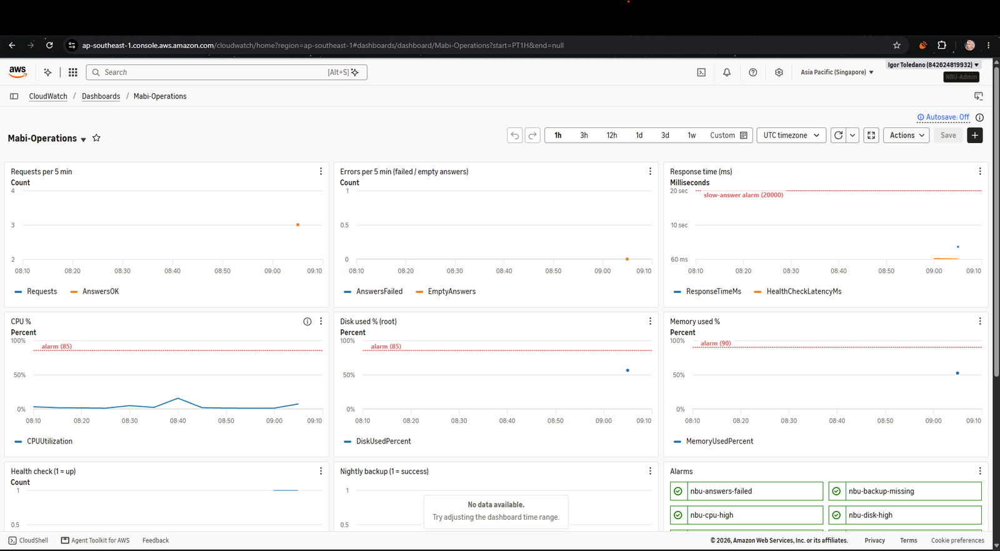
Every request is logged
Each question is written as one JSON line to the log group /nbu/mabi/requests: the question, when it was asked, how long the answer took, whether it succeeded, the model and the exact version (librechat-v0.8.9-rc1+nbu-<git commit>).
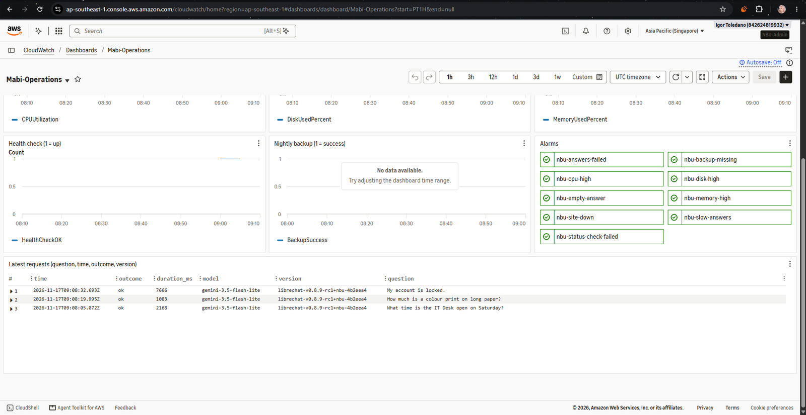
| Log group | What | Retention |
|---|---|---|
/nbu/mabi/app | LibreChat container output | 14 days |
/nbu/mabi/database | MongoDB container output | 14 days |
/nbu/mabi/requests | One line per question (above) | 30 days |
/nbu/ops/backups | One line per backup | 30 days |
/aws/lambda/nbu-healthcheck | Health check runs | 14 days |
Nine alarms, all emailing a real inbox
| Alarm | Fires when | Why this threshold |
|---|---|---|
nbu-site-down | HealthCheckOK < 1, 2 of 2 × 5 min; missing data = breaching | Users cannot reach Mabi; the most important alarm |
nbu-status-check-failed | EC2 StatusCheckFailed > 0, 2 × 1 min | The server itself is broken (hardware/OS); reboot needed |
nbu-cpu-high | CPUUtilization > 85%, 2 × 5 min | t3 credits run out under sustained load; answers slow down |
nbu-memory-high | MemoryUsedPercent > 90%, 5 min | Node + MongoDB on 2 GiB; above 90% the kernel may kill one |
nbu-disk-high | DiskUsedPercent > 85%, 5 min | A full disk stops MongoDB writing; leaves time to clean up |
nbu-answers-failed | AnswersFailed ≥ 3 in 15 min | The model is failing (429/503, bad key), not just one blip |
nbu-empty-answer | EmptyAnswers > 0 in 30 min | An empty reply means something broke silently |
nbu-slow-answers | ResponseTimeMs average > 20,000 over 10 min | Normal answers take 1–8 s; 20 s means users give up |
nbu-backup-missing | BackupSuccess < 1 in 1 day; missing = breaching | The nightly backup did not run or failed |
Every alarm sends both ALARM and OK to the SNS topic nbu-alerts, so the admin also learns when a problem has cleared.
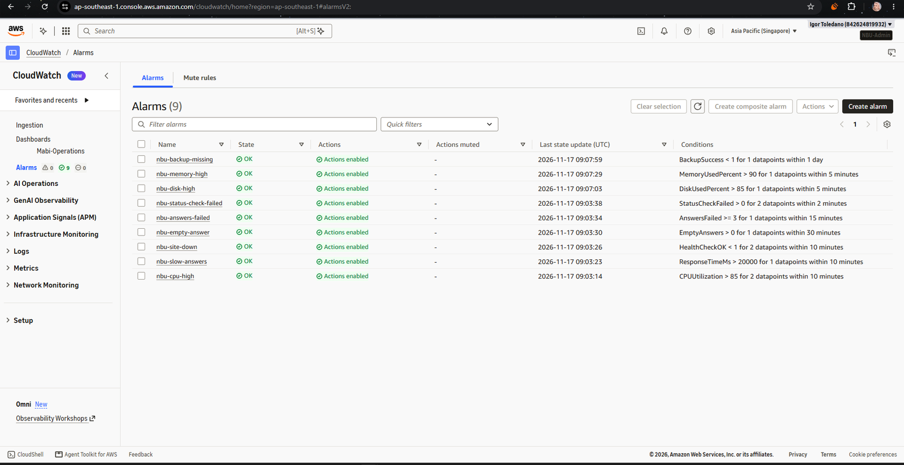

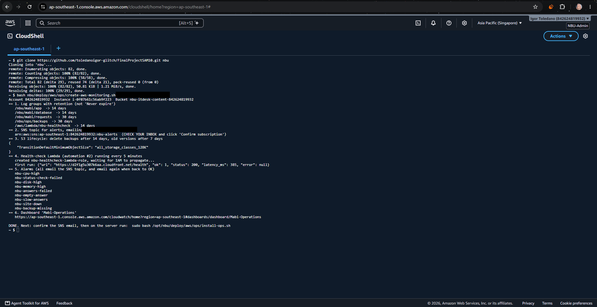
Backup and restore
What would be lost, and how each part is protected
| What | Where it lives | Protection | Restored by |
|---|---|---|---|
| Chats, users, settings (MongoDB) | EC2 disk | mongodump every night 02:00 Manila → S3 backups/mongodb/ (3 copies kept on the server, 14 days in S3) | restore-mongo.sh |
| IT Desk knowledge | S3 content/ + git | S3 versioning; copy in git | Re-upload, or an older S3 version |
| Config and scripts | git (GitHub) | Full history; the live config is regenerated from S3 at every start | git clone + start-mabi.sh |
| Gemini API key | Parameter Store | Managed by AWS, never on the laptop or in git | Read again at start |
| Session secrets | Server, secrets.env (mode 600) | Not backed up on purpose: if lost, new ones are made and users just log in again | start-mabi.sh |
| Uploaded files | Server uploads/ | Not backed up: Mabi does not use file uploads (known gap) | n/a |
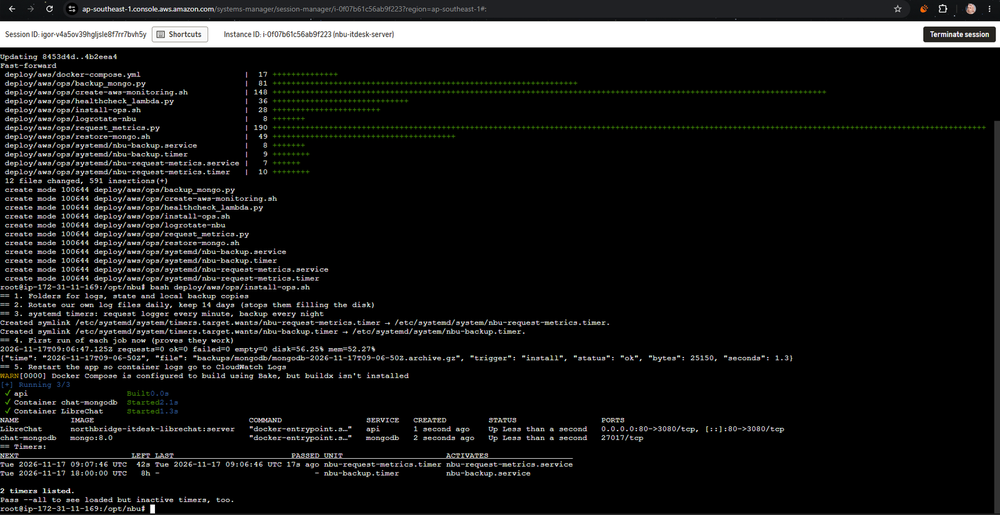
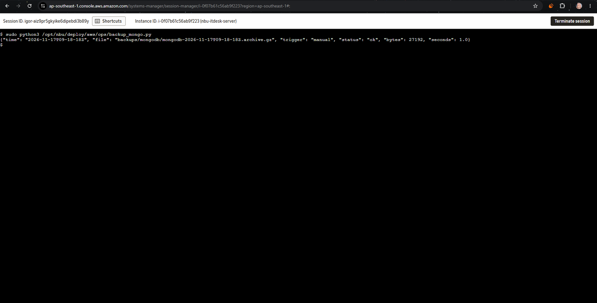

Restore test, 2026-11-17 (E-11)
To prove the backup is real, I took a backup at 09:18, then asked Mabi a new question (the Wi-Fi question) so the live database had one chat the backup did not. Then I ran restore-mongo.sh: it downloads the newest backup from S3, counts records, stops the stack, moves the live database aside (not deleted), restores into an empty MongoDB, counts again and restarts Mabi.
| Users | Conversations | Messages | |
|---|---|---|---|
| Before restore (live) | 1 | 7 | 18 |
| After restore (09:18 backup) | 1 | 6 | 16 |
93 documents restored, 0 failed; the site answered HTTP/1.1 200 OK; restore finished in 43 seconds. In the browser the old chats were back and the Wi-Fi chat was gone, which is exactly the one conversation (2 messages) created after the backup.
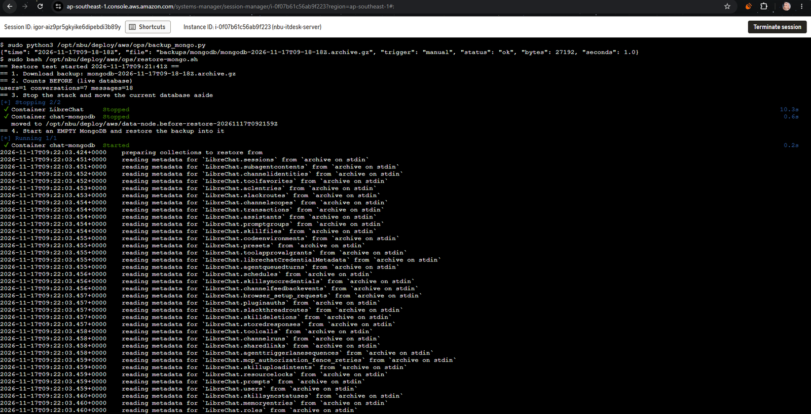
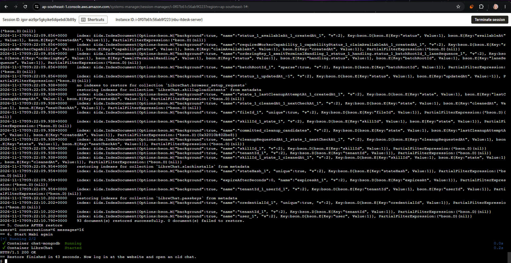
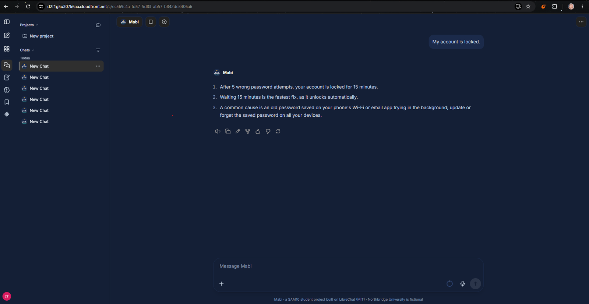
| Target | Measured | |
|---|---|---|
| RPO (data we can lose) | 24 hours: one backup a night is enough for an FAQ chat; nobody's work depends on chat history | Lost exactly the chats made after the last backup (1 conversation) |
| RTO (time to get it back) | 15 minutes | 43 seconds for the database, plus logging in |
Not yet rehearsed: rebuilding a completely lost server (new EC2 → clone repo → setup-server.sh → start-mabi.sh → restore), estimated 20–30 minutes. Full procedure: docs/backup-restore.md.
Security
Each control in one sentence
| Control | What it does |
|---|---|
| MFA on root, root not used | The account owner login needs a phone code and is kept for emergencies, so a stolen password alone cannot take the account. |
IAM user igor + MFA → role NBU-Admin | Daily work uses a personal read-only login that must deliberately switch into the admin role, so there is no shared admin login and every admin action is attributable. |
Instance role NBU-EC2-Role | The server gets short-lived credentials for only what it needs (S3 bucket, one parameter, logs, Session Manager), so no access keys are stored on it. |
| Parameter Store SecureString | The Gemini key is encrypted in AWS and read at start-up, so it is not in the code, the image, git history or a screenshot. |
| Security group: CloudFront prefix list only | The server refuses any connection that does not come through CloudFront, so it cannot be attacked directly by IP. |
| HTTPS via CloudFront | Passwords and chats are encrypted between the user and AWS, and plain HTTP is redirected. |
| No SSH; Session Manager | There is no port 22 and no key file to lose; admin shells go through IAM and are logged. |
| Database not exposed | MongoDB has no published port, so it is reachable only by the app container on the same Docker network. |
| Sign-up closed, social login and password reset off | Only accounts the admin creates exist, which protects the free model quota and limits who can reach the chat. |
CloudTrail nbu-trail (all regions) | Every API call in the account is recorded, so changes can be traced to a person and a time. |
.gitignore + .env mode 600 | Secrets files never enter git and only root can read them on the server. |
| Budget alert | An email arrives if anything starts costing money, which also catches a hijacked account. |
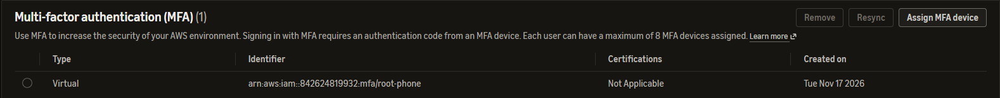
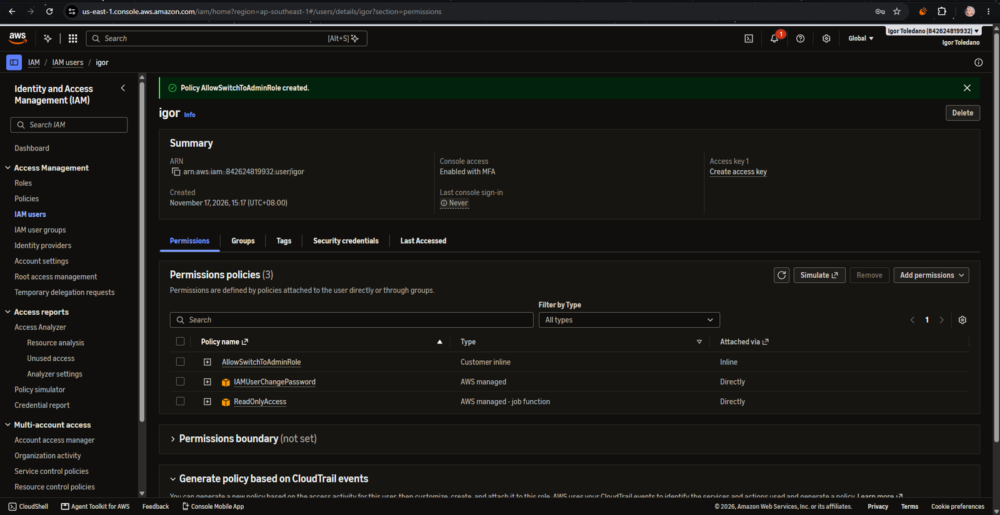
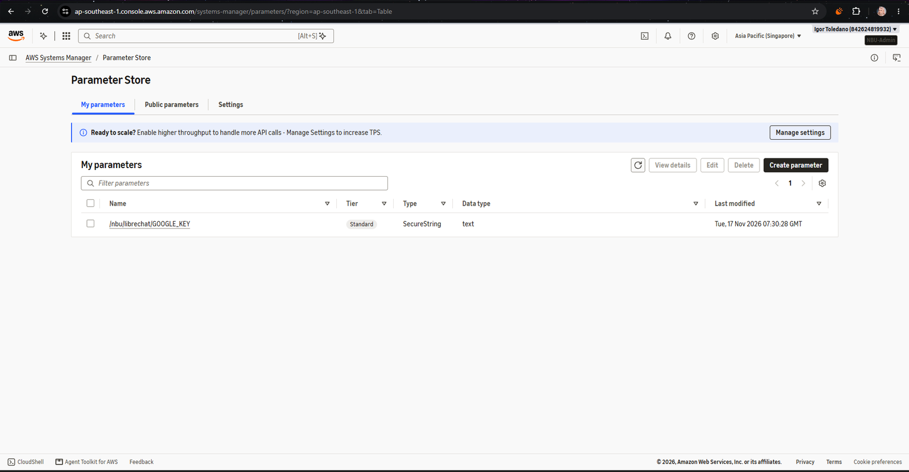
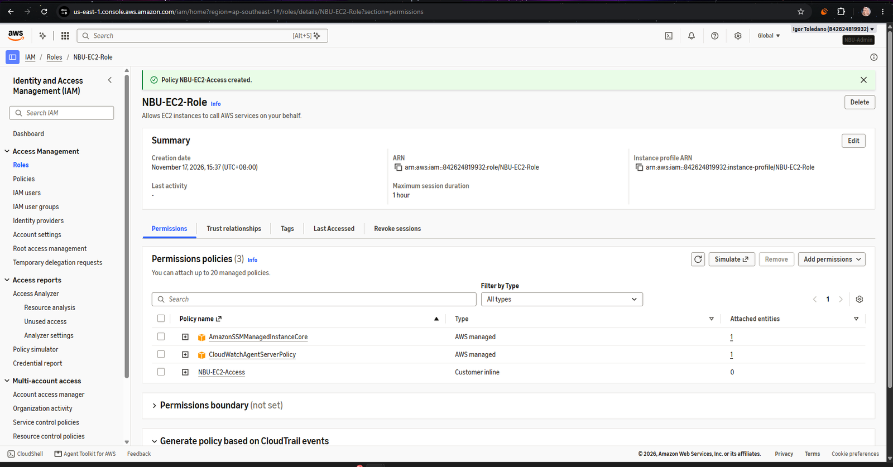
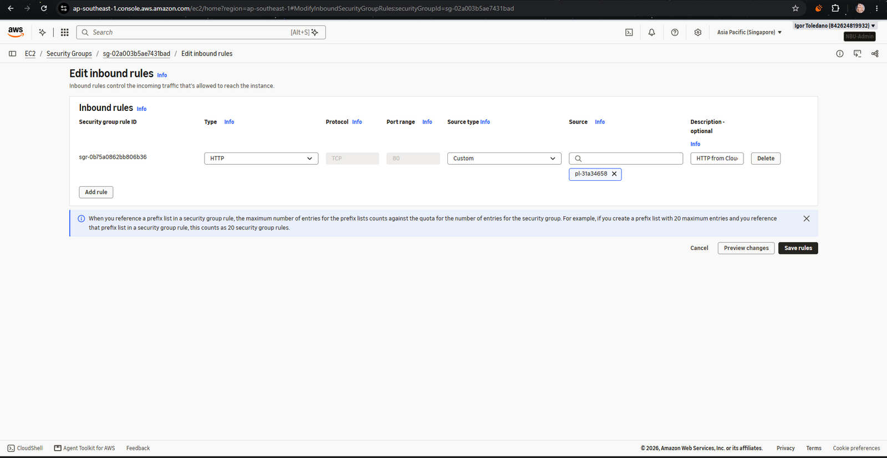
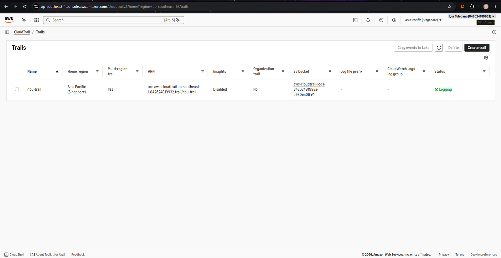
Security problems found and fixed: before and after
| Problem found | Before | After |
|---|---|---|
| Plain HTTP | http://18.138.237.86 "Not secure" | HTTPS at CloudFront, HTTP redirected |
| Server open to the internet | Port 80 from 0.0.0.0/0 | Port 80 from CloudFront prefix list only |
| Anyone could register | Sign-up open | Sign-up closed (ALLOW_REGISTRATION=false) |
| Key in a text file | Laptop .env | Parameter Store SecureString, read at start |
| Admin logins | Root account for everything | Root with MFA, unused; personal user + MFA + role |
| Remote access | SSH would need port 22 and a key file | No SSH; Session Manager |
| No audit trail | Nothing recorded | CloudTrail in all regions |
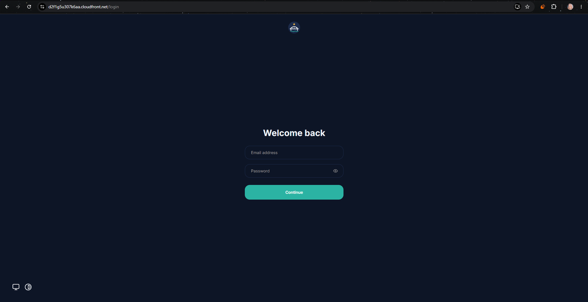
Personal data check
- Content: all invented (fictional university,
.exampledomains). No real names, IDs, phone numbers or addresses. - Users: only test accounts created by me. The password in test question 8 ("Summer2026!") is invented for the test.
- Screenshots on this site: checked for keys, tokens and passwords; my personal email was blacked out in three of them.
- Git history: no
.env, key or password has ever been committed (.gitignorefrom the first commit). - Finding (2026-11-18): my own request log copies each question into CloudWatch, so when a user types a password (test Q8, "Summer2026!", invented) it is kept in
/nbu/mabi/requestsfor 30 days. Mabi refuses to repeat it, but the operations tooling still stores it. Fix planned: mask anything that looks like a password or code before logging (see next steps). - Sent outside AWS: only invented questions and content, to Google Gemini.